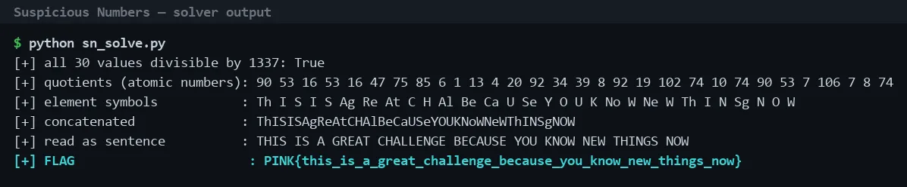

01Start point: inspect the number sequence
- What I found: every value is divisible by 1337 with no remainder. For example 120330 / 1337 = 90, 70861 / 1337 = 53 and 21392 / 1337 = 16.
- Thinking: 1337 is "leet", and a shared exact factor across all 30 values suggests it is a multiplier hiding another sequence.
02Pivot: treat the quotients as atomic numbers
- What I did: divided every value by 1337, which gives 90 53 16 53 16 47 75 85 6 1 13 4 20 92 34 39 8 92 19 102 74 10 74 90 53 7 106 7 8 74.
- What I found: each quotient is a valid atomic number (all between 1 and 106).
- Thinking: small integers that all fit the range of the periodic table are more likely element numbers than random data.
- Result: looking each atomic number up in order gives the element symbols Th I S I S Ag Re At C H Al Be Ca U Se Y O U K No W Ne W Th I N Sg N O W.
03Pivot: read the element symbols as letters
- What I did: concatenated the symbols to get ThISISAgReAtCHAlBeCaUSeYOUKNoWNeWThINSgNOW, then regrouped them as letters.
- Result: the sentence THIS IS A GREAT CHALLENGE BECAUSE YOU KNOW NEW THINGS NOW.
- Thinking: the symbols only look like noise when read as chemistry. Read as letter groups they spell English words.

04Result: recover the flag
- What I did: converted the sentence to lowercase and replaced spaces with underscores to match the challenge's flag convention.
- Result: PINK{this_is_a_great_challenge_because_you_know_new_things_now}